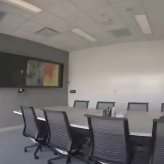

|
Yeojin Song I'm a graduate student in Artificial Intelligence at Ewha Womans University. My research focuses on unlocking and properly leveraging the language capabilities of large language models — particularly in vision-language understanding, LLM reasoning, and building world models through video generation. |

|
ResearchI'm interested in computer vision, deep learning, generative AI, and image processing. Most of my research is about inferring the physical world (shape, motion, color, light, etc) from images, usually with radiance fields. Some papers are highlighted. |
|
 |
GR3EN: Generative Relighting for 3D Environments
Xiaoyan Xing, Philipp Henzler, Junhwa Hur, Runze Li, Jonathan T. Barron, Pratul P. Srinivasan, Dor Verbin SIGGRAPH, 2026 project page / arXiv Distilling the outputs of a video-to-video relighting diffusion model into a 3D reconstruction enables controllable 3D relighting of room-scale scenes. |